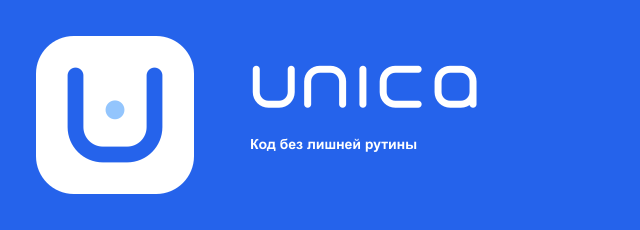
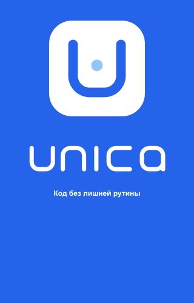
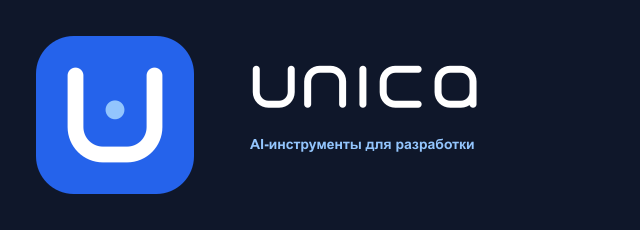
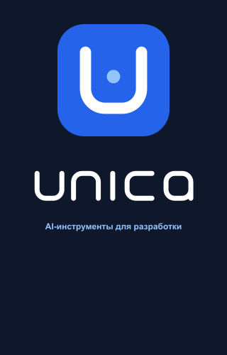
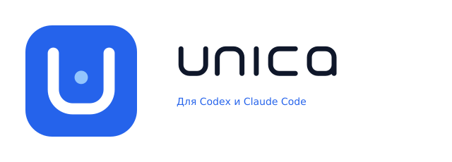
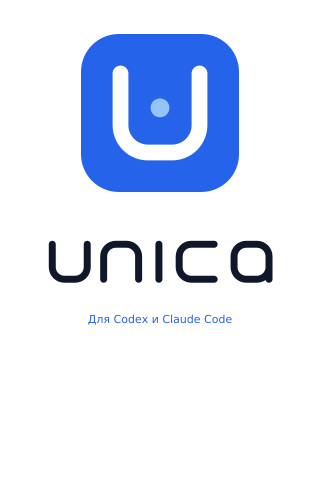
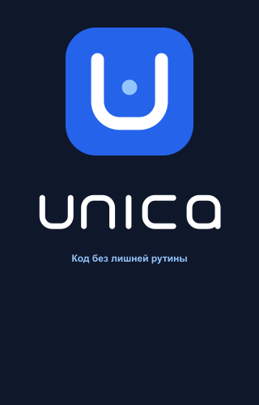

Код без лишней рутины
UNICA VISUAL KIT · 2026
CLASSIC WORDMARK
LOGO-LETTER + MARK
Знак заменяет первую u. Контур n начинается после измеримого чистого просвета.
X = 5.336
gap = 7.2036
TRANSPARENT ASSETS
Без внешней подложки. Слева — прозрачность, справа — рабочий фон.
GITHUB THEMES
Один прозрачный синий logo-letter на светлой и тёмной теме README.
unica/unicaPublic
LIGHT THEMETRANSPARENT BLUE
unica/unicaPublic
DARK THEMETRANSPARENT BLUE
MARK SCALE
Один знак во всех размерах. 24 px — минимальный рекомендуемый размер.
24
48
96
128
256
512
MIN 24 PX
IN CONTEXT
SIGNATURES
Большой знак. Меньший wordmark и маркетинговая строка — единый блок напротив.







X SYSTEM
X = ВИДИМАЯ ТОЛЩИНА ЛИНИИ. Размеры каждого мастер-контура указаны в его X.
WORDMARK32X × 6X
БУКВА 6X × 6X · I 1X × 6X
LOGO-LETTER36X × 10X
СИНЯЯ ПОДЛОЖКА 10X × 10X · РАССТОЯНИЕ ДО N = 1.35X
MARK10X × 10X
СИНЯЯ ПОДЛОЖКА 10X × 10X · U 6X × 6X
CLEAR SPACE
ЗАЩИТНОЕ ПОЛЕ = 2X ОТ ГРАНИЦЫ ИЗОБРАЖЕНИЯ.
WORDMARK2X
LOGO-LETTER2X
MARK2X
SOCIAL AVATAR
Full-bleed синий фон: круглая маска не обрезает знак, квадратное отображение не открывает белые углы.
ОДИН ФАЙЛ · КРУГЛАЯ МАСКА ИЛИ КВАДРАТ · БЕЗ ПРОЗРАЧНЫХ УГЛОВ